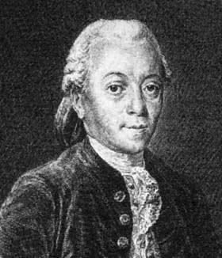

| Choisissez votre langue ! | Choose your language ! |
Entiers de Bézout
d=ua+vb
preuve: C'est tout simplement parce que d est (par définition même) un générateur de aℤ+bℤ
Le résultat (très important) ci-dessus est connu sous le nom de 'théorème de Bézout' ou ' Identité de Bézout' , mais la première preuve en fut donnée par Bachet de Méziriac.
 La réciproque est fausse!
La réciproque est fausse!
(On peut écrire 4=2×8-2×6 et 4 n'est pas le pgcd de 6 et 8)
Bézout integers
proof: This is simply because d is (by definition) a generator of aℤ+bℤ
The (very important) result above is known as 'theorem of Bézout' or ' Identity of Bézout' , but the first proof was given by Bachet de Meziriac.
 The converse is false!
The converse is false!
(We can write 4=2×8-2×6 and 4 is not the gcd of 6 and 8)
|
Claude-Gaspard Bachet de Méziriac (1581/1638-FR) |
Etienne Bézout (1750/1783-FR) |
|  |
démonstration
Considérons l'équation:xa+yb= 0
Elle a comme solution évidente le couple (u,v)=(b/d,-a/d) où d=pgcd(a,b) ainsi que tous les multiples de ce couple, c'est à dire les couples de la forme (kb/d,-ka/d)=(ku,kv).
Ce sont d'ailleurs les seules solutions entières, en effet si
u'a+v'b=0
On en déduit que:
v'ua+vv'b=0
vu'a+vv'b=0
donc v'u-u'v=0 donc v'u=u'v
Comme v est premier avec u v divise v', v'=kv
Comme u est premier avec v u divise u', u'=hu
donc kvu=huv soit (h-k)uv=0.
Si u=0 alors (u',v')=k(u,v)
Si v=0 alors (u',v')=h(u,v)
Enfin si u ≠ 0 et v ≠ 0 alors uv ≠ 0 et h=k
Cela étant vu si (u,v) est un couple d'entiers de Bézout pour (a,b) et si (x,y) est une solution de xa+yb=0 alors (u+x,v+y) est un autre couple d'entiers de Bézout pour (a,b). Ce qui justifie notre assertion que les couples de Bézout sont en nombre infini.
Algorithme de détermination
Se pose alors le problème de la détermination pratique des entiers de Bézout. L'algorithme d'Euclide fournit une solution.Supposons d'abord que a soit un multiple de b disons a=bd alors pgcd(a,b)=b, un couple de Bézout est (0,1)
Supposons maintenant que a et b ne soient pas multiples l'un de l'autre on sait que pgcd(a,b) = pgcd(b,c= a%b)
Si b et c sont multiples l'un de l'autre c est le pgcd de a et b donc
a=bq1 +c (la division euclidienne) donne c=a-bq1 qui est une relation de Bézout on peut donc prendre comme solution (1,-q1).
Si maintenant b et c ne sont pas multiples l'un de l'autre, on poursuit l'algorithme
pgcd(a,b)=pgcd(b,c) = pgcd(c,d) où d =b%c
Si c est un multiple de d on part de :
d=b-cq2 puis on remplace c par a-bq1 de la sorte on obtient: d=b-(a-bq1)q2 et ainsi de suite...On peut donc prendre comme solution (-q2,1+q1q2)
En résumé on va construire une suite récurrente double (rn) avec:
- r0=a
- r1=b
- rn+1 est le reste de la division de rn-1 par rn
Deux suites récurrentes doubles un et vn
où u0=1 , u1=0 , v0=0, v1=1 et
un+1=un-1-qn+1un
vn+1=vn-1-qn+1vn
On arrête le processus dès que rn+1 divise rn les entiers de Bézout sont alors (un,vn)
Vous pouvez maintenant générer quelques exemples:
proof
xa+yb= 0
It admits as an obvious solution the pair (u,v)=(b/d,-a/d) where d=gcd(a,b) and as well all the multiples of that pair, so the pairs (kb/d,-ka/d)=(ku,kv) where k is an integer.
By the way they are the only ones integer solutions, if
u'a+v'b=0
we conclude that :
v'ua+vv'b=0
vu'a+vv'b=0
hence v'u-u'v=0 donc v'u=u'v
since v is coprime with u v divides v', v'=kv
since u is coprime with v u divides u', u'=hu
So kvu=huv or (h-k)uv=0.
if u=0 then (u',v')=k(u,v)
if v=0 then (u',v')=h(u,v)
finally if u ≠ 0 and v ≠ 0 then uv ≠ 0 and h=k
This being seen if (u,v) is a Bézout paur for (a,b) and if (x,y) is a solution of xa+yb=0 then (u+x,v+y) is another pair of Bézout integers for (a,b). This prove that Bézout integers are in infinite number.
Determination algorithm
The problem then arises of the practical determination of the integers of Bezout. Euclid's algorithm provides a solution.First suppose that a is a multiple of b say a=bd then gcd(a,b)=b, a Bézout couple is (0,1)
Now suppose that a and b are not multiples of each other we know that gcd(a,b) = gcd(b,c=a%b)
If b and c are multiples of each other c is the gcd of a and b so
a=bq1 +c (Euclidean division) gives c=a-bq1 which is a Bézout relation we can therefore take as solution (1,-q1).
If now b and c are not multiples of each other, we continue the algorithm
pgcd(a,b)=pgcd(b,c) = pgcd(c,d) where d =b%c
If c is a multiple of d, we start from:
d=b-cq2 then we replace c by a-bq1 in this way we obtain: d=b-(a-bq1)q2 and so on... We can therefore take as a solution (-q2,1+q1q2)
In summary we will build a double recurrent sequence (rn) with:
- r0=a
- r1=b
- rn+1 is the remainder of the division of rn-1 by rn
Two double recurring sequences un and vn where u0=1 , u1=0 , v0=0, v1=1 and
un+1=un-1-qn+1un
vn+1=vn-1-qn+1vn
We stop the process as soon as rn+1divides rn the Bézout integers are then (un,vn)
You can now generate some examples:
Généralisation aux familles finies
Le théorème se généralise aux familles finies indexées d'entiers relatifs :Cette condition nécessaire, est également suffisante dans le cas d'entiers premiers entre eux (cas d=1).
C'est une simple conséquence de l'associativité du pgcd.
Le coin de Python
Ce programme utilise l'algorithme précédent.
Le coin de Julia
Même chose avec Julia 1.6, mais il faut commencer par modifier la définition du quotient et du reste pour les négatifs (non conformes à la définition mathématique).)
Generalization to finite families
The theorem can be generalized to finite indexed families of integers.This neccessary condition is sufficient in the case of coprime integers (case d=1).
This is a simple consequence of the associativity of gcd.
Python's Corner
This program uses the previous algorithm.
Julia's corner
Same with Julia 1.6, but need to start by changing the definition of quotient and remainder for negatives (not conforming to the mathematical definition).
|
Création Gilles Dubois
Created by Gilles Dubois
|
Janvier 2022
January 2022
|
Version mobile Jquery
Mobile Jquery version
|
|